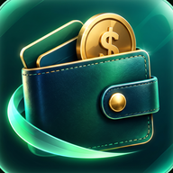

Daily Budget Planner App — know what you can spend today
This daily budget planner starts from your pay schedule. Tell it when you are paid and what bills are coming, and it shows a spendable amount for today, so you can spend with a clear number instead of a guess.
Get it on EtsyOne-time purchase. No subscription.
What it does
- Pay schedule: weekly, every two weeks, twice a month, monthly, or irregular, with a different next payday when needed.
- Today screen with spendable today, what is left today, days to payday and a How we got this number breakdown.
- Bills (rent, phone, loans or cards): money is set aside before they are due.
- Quick expense entry: type an amount and tap a category.
- Budget envelopes with optional limits.
- Funds for non-monthly costs such as car insurance, school fees or a trip, with a goal and a date.
- Activity list of purchases; import a bank CSV file or export your activity as CSV.
- A Did your pay arrive? prompt starts a new pay period.
- Print your plan; light and dark theme.
How it works
- You buy it once on Etsy and download the file in a web browser (the Etsy phone app cannot download digital files).
- On a computer, you open the app file in your browser. On a phone, you open the app's web address in Safari (iPhone) or Chrome (Android) and choose Add to Home Screen (Android: Install app).
- Your data stays on your device. There is no account and no subscription.
- After the first load it works without internet.
- Languages: English, Spanish, French, German and Portuguese.
What it does not do
- It does not connect to your bank; you import a CSV file yourself.
- It does not suggest bill amounts or give financial advice.
- No cloud sync and no account. Each device keeps its own data; move it with a backup file.
Questions
Is this daily budget planner a subscription?
No. You buy it once on Etsy. There is no monthly fee and no account.
How is my spendable amount worked out?
From the money you have and your pay period, after setting aside upcoming bills. The Today screen shows how the number was reached.
Can I use it with an irregular income?
Yes. Choose irregular and enter each payday as it comes.
Does it work offline?
Yes. After the first load it works without internet and keeps your data on your device.
Can I import transactions from my bank?
Yes, as a CSV file that you download from your bank. The app does not connect to your bank directly.